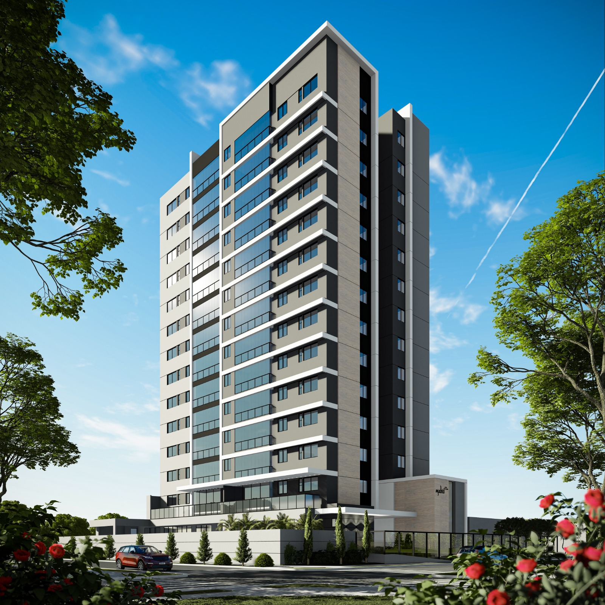
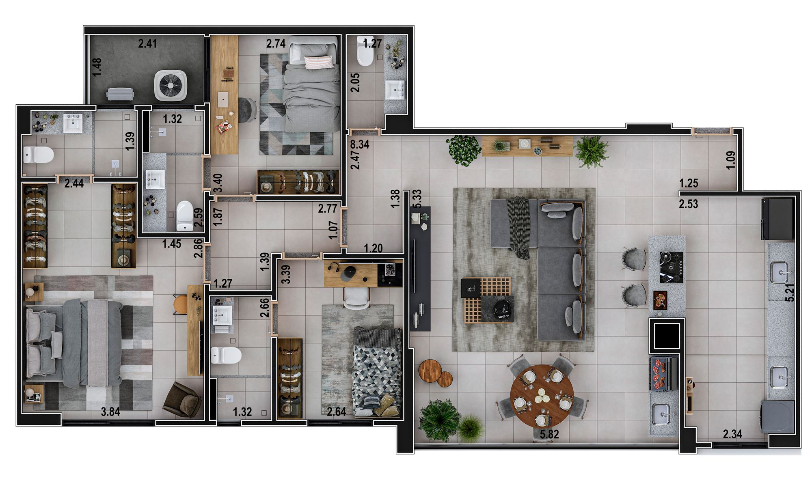
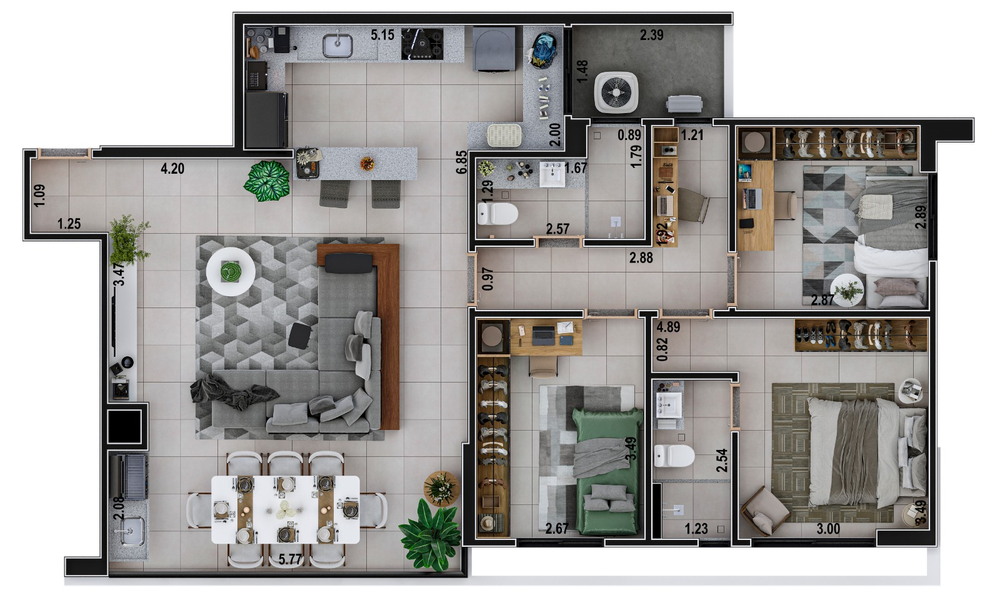
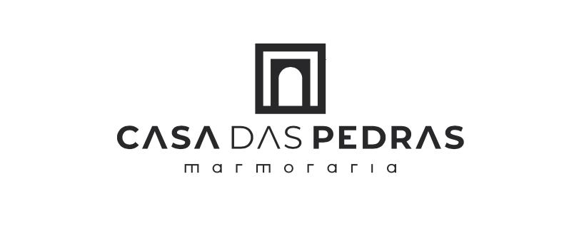
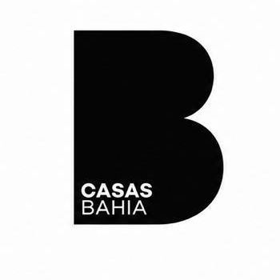
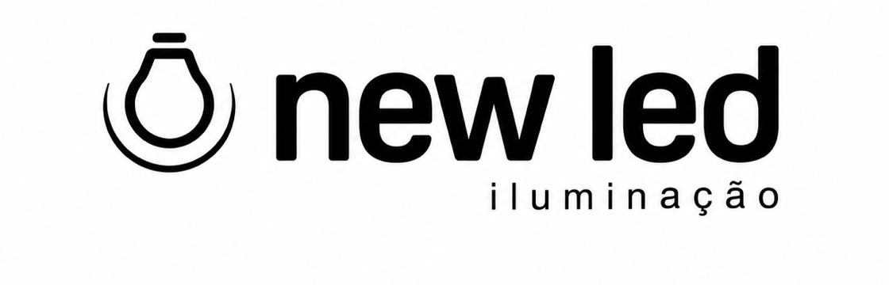
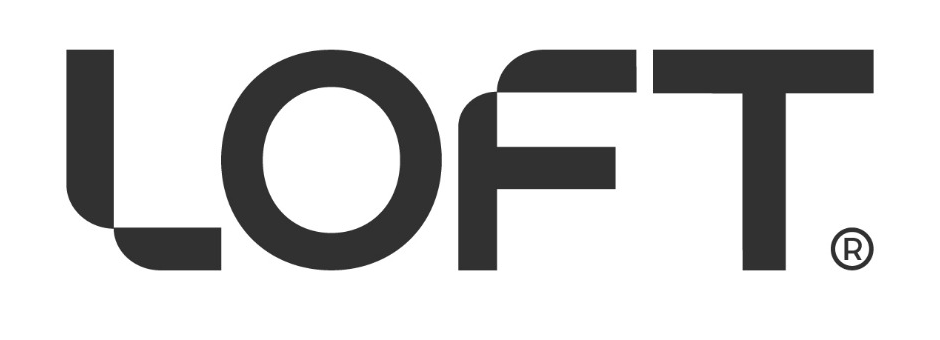

14 andares de acabamento de alto padrão no Jardim Sol Nascente, em Luís Eduardo Magalhães. Apartamentos de 1 e 3 suítes com vagas duplas e escaninho privativo. Entrega Julho/2027.
Todas as 50 unidades com 2 vagas de garagem dedicadas — térreo ou subsolo, mapeadas pela engenharia.
Espaço extra de armazenamento no 1º pavimento — um por apartamento. Pra equipamentos, malas e vinho.
Distribuição inteligente: 2 unidades por face. Mais privacidade, ventilação cruzada e luz natural.
Sinal, parcelas mensais e balões personalizáveis. Permuta e propostas especiais aceitas.
Empresa criada só para este empreendimento: o Madrid não se mistura com as outras operações dos sócios. Ver quem constrói.
Conceito de moradia vertical com a sensação de casa: pé-direito amplo, plantas generosas, varanda gourmet.
Sete ambientes de uso comum. Toque em qualquer um para ver a foto.
Imagens ilustrativas do projeto arquitetônico.
Esquema do pavimento-tipo (2º ao 14º andar): são 4 apartamentos por andar, e o "final" é a posição de cada um. Finais 01 e 04 = 1 suíte; finais 02 e 03 = 3 suítes. A tipologia selecionada acima fica destacada. O 1º pavimento é diferente: são apenas 2 apartamentos, ambos de 3 suítes.

A planta mais procurada. Espaço amplo para famílias, com 3 suítes, lavabo, sala ampla, varanda gourmet e cozinha integrada.
Área privativa = área interna do apartamento · Vagas duplas = 2 vagas exclusivas na garagem · Escaninho = depósito privativo no prédio · Finais 02 e 03 = posição do apartamento no andar
Quero esta planta
Ideal para casais, investidores e profissionais que valorizam localização e padrão. Sala integrada, cozinha gourmet, suíte com closet.
Área privativa = área interna do apartamento · Vagas duplas = 2 vagas exclusivas na garagem · Escaninho = depósito privativo no prédio · Finais 01 e 04 = posição do apartamento no andar
Quero esta plantaPlantas, ficha técnica e imagens — pronto pra compartilhar com a família.
Estamos preparando um apartamento decorado para você caminhar por dentro do Madrid antes da entrega — sentir os espaços, os acabamentos e como cada ambiente ganha vida.
Quer ser um dos primeiros a visitar? Fale com a gente pelo WhatsApp e avisamos assim que o decorado estiver pronto.



Parceiros do apartamento decorado do Madrid Casa Elevada.
Comprar na planta é confiar em quem entrega. Estes são os nomes por trás da obra.

Responsável pela execução da obra do Madrid Casa Elevada.
Sócio do empreendimento, junto com a Bella Vista.
Sócio do empreendimento, junto com a Baumann.
O Madrid é tocado por uma SPE — uma empresa criada só para este empreendimento, a Torre Madrid Empreendimentos Imobiliários SPE Ltda (CNPJ 51.114.117/0001-37). Ela tem CNPJ, contabilidade e contratos próprios, separados das outras empresas dos sócios.
Atualizado regularmente pela equipe de engenharia.
Do primeiro contato à entrega das chaves — sem mistério.
Chame no WhatsApp ou envie o formulário. Um consultor te atende e entende o que você procura.
O consultor monta o plano com você: entrada (sinal), parcelas mensais, reforços periódicos (balões) e até permuta — usar um bem seu como parte do pagamento.
Fechou? Assinatura do contrato e documentação, com o consultor acompanhando cada etapa.
Você acompanha o avanço da obra em tempo real aqui no site, enquanto paga conforme o plano combinado.
Vistoria e entrega das chaves. Até lá, a tabela é corrigida todo mês pelo INCC (o índice do custo da construção) — por isso, quanto antes, melhor.
Cercado por restaurantes, comércio, escolas premium e fácil acesso às principais vias da cidade.
Preencha o formulário e um consultor entra em contato em até 1 dia útil — com tabela, plantas e opções de pagamento.
Como recompensa, vou compartilhar um segredo: o sistema interno do Madrid já tem 50 unidades mapeadas em tempo real, com simulador, mapa de garagem detalhado e propostas em PDF.
Se você é corretor de imóveis e quer entender como funciona, fala com a gente. Quem sabe a gente trabalha junto.